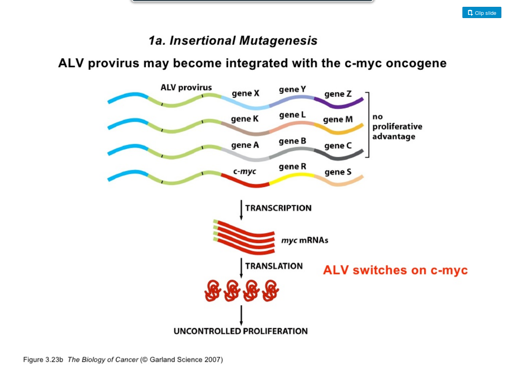

Viirused ja onkogeenid
Onkobioloogia
Taavi Päll
lektor, Tallinna Tehnikaülikool
Lindude leukeemia viraalne ülekanne
- 1908 aastal näitasid Taani teadlased Vilhelm Ellerman (1871-1924) ja Oluf Bang (1881-1937) et lindude leukeemia (avian viral leukemia) kandub viraalsel teel üle.

Rousi kana sarkoomi mudel
- Aastatel 1909-11 katsetas Francis Peyton Rous (1879-1970) kana sarkoomiga.
- Rous leidis, et seda tuumorit on võimalik kanadel üle kanda vähi rakkudest sõltumatult.
- Rous pälvis selle töö eest 1966. aastal Nobeli preemia.


Vähk võib olla nakkav
Mitmed uuringud näitasid loomadel vähi seost viirusnakkustega
- 1930-ndatel kirjeldati Richard E. Shope (1901-1966) and E. Weston Hursti (1900-1980) poolt küülikute papilloomiviirus
- John Joseph Bittneri poolt (1904-1961) hiirte piimanäärme viirus (mouse mammary tumor virus, MMTV).
- 1950-ndatel avastati Ludwig Grossi (1904-1999) poolt hiirte leukeemiaviirus (retroviirus) ja hiirte polüoomiviirus.
Kas vähk on viirushaigus?

Hiirte peal leitud seos leukeemia ja viirusnakkuse vahel pani aluse hüpoteesile, et vähk on viirushaigus.
Viirused põhjustavad rakkude transformatsiooni
Rousi sarkoomiviirus muudab fibroblaste
1950-ndate lõpus ja 1960-ndatel uurisid Harry Rubin ja Howard Temin Rousi sarkoomiviirust (RSV) koekultuuris, kasutades kana fibroblaste (CEF)

- RSV nakatatud CEF-id moodustavad kolooniad (foci/clusters)
- kolooniaid moodustavad rakud on muutunud morfoloogiaga (trasformeerunud) ja sarnanevad sarkoomi rakkudega
Transformeerunud rakkude iseloomulikud omadused
- kontakt-inhibitsiooni kadumine
- sõltumatus adhesioonist (anchorage independence) -- rakud kasvavad mitmes kihis
- poolduvad ~lõpmatult (immortaliseerumine)
- sõltumatus kasvufaktoritest, rakkude jagunemine ei arresteeru kasvufaktorite eemaldamisel
- kõrge gükoositransport
- tumorigeensus: moodustavad peremees-loomas tuumoreid
Lihtsa retroviiruse elutsükkel
- Retroviirused transformeerivad kana ja hiire rakke.
- Mehhanism: insertsiooniline mutagenees.

ALV/RSV virion

src paradigma
- Põhinedes RSV võimel mõni päev peale nakatamist rakke transformeerida, töötasid 1958. Howard Temin and Harry Rubin välja nn focus assay
- Fookuste hulk oli otseses seoses rakkudele lisatud RSV hulgaga, seega oli RSV täiesti piisav peremeesraku transformeerimiseks.
![Figure 3. Cell transformation by RSV. (A) The RSV focus assay of transformed cells in a chick embryo fibroblast monolayer as described by Temin and Rubin (1958) showing a 1:100 and 1:1000 dilution of the virus stock. Each stained dot represents a focus of transformed cells. (B) A scanning electron micrograph of one focus of RSV-transformed cells. It was the ability to transform cells in culture and to isolate individual clones of RSV that led to the molecular biology and genetic studies of tumor viruses. (Reproduced from Weiss, R.A., PhD thesis, University of London. 1969.)](https://www.researchgate.net/profile/Robin_Weiss/publication/51823723/figure/fig3/AS:276993888276485@1443051897544/Figure-3-Cell-transformation-by-RSV-A-The-RSV-focus-assay-of-transformed-cells-in-a.png)
Paljunemine ja raku transformeerimine on viirusel eraldi funktsioonid
- raku fenotüüp on viiruse genoomi kontrolli all, on olemas RSV mutandid, mis põhjustavad transformeerimisel rakkudel pikenenud fenotüübi;
- viiruse paljunemine pole raku transformatsiooniks vajalik, replikatsiooni-defektne mutant transformeeris rakke ilma viirust tootmata;
- tekivad spontaansed mutandid mis replitseeruvad kuid enam ei transformeeri (td, transformation deficient), enamus RSV liine on mitte-defektsed (neil on genoomis olemas kõik viiruse replikatsiooniks vajalikud geenid, pluss onkogeen).
RSV src pärineb peremeesraku genoomist
Kasutades pöördtranskriptaasi näidati, et RSV-s olev transformeeriv src RNA järestus on pärit linnu genoomist.

Metsik tüüpi RSV vs. transformatsioonidefektne (td)
- td RSV genoom on väiksem.

Retroviiruste onkovalkude funktsionaalsed klassid
| Klass | Näide | Viirus |
|---|---|---|
| kasvufaktor | Sis (PDGFB) | ahvi sarkoomiviirus |
| retseptor-türosiinkinaas | ErbB (EGFR) | linnu erütroblastoosi viirus |
| hormoonretseptor | ErbA (THRA) | linnu erütroblastoosi viirus |
| G valk | Ha-ras, GTPase | Harvey sarkoomiviirus |
| Ki-ras, GTPase | Kirsten sarkoomiviirus | |
| adaptorvalk | Crk, adaptorvalk | linnu sarkoomiviirus |
| mitte-retseptor TK | Src, tsütoplasma kinaas | Rousi sarkoomiviirus |
| Abl, tsütoplasma kinaas | Abelsoni hiire leukemia virus | |
| seriin/treoniin kinaas | Akt, tsütoplasma kinaas | Akt8 hiire thymoma virus |
| Mos, tsütoplasma kinaas | Moloney hiire sarkoomiviirus | |
| transkriptsiooni regulaator | Jun, AP1 trans.fakt. | linnu sarkoomiviirus 17 |
| Fos, AP1 trans.fakt. | FBJ hiire sarkoomiviirus | |
| Myc, trans.fakt. | linnu müelotsütomatoosi viirus MC29 | |
| lipiidikinaas | Pi3k | linnu sarkoomiviirus 16 |
Insertsiooniline mutagenees
- Linnu leukoosiviiruse (ALV) genoom ei sisalda onkogeeni, kuid see viirus on onkogeenne.
- Onkogeenne toime avaldub selle viiruse integratsioonil mõne proto-onkogeeni ette.

Ka mitte transformeerivad viirused võivad aktiveerida proto-onkogeene genoomi insertsioonil
| Geen | Viirus | Kasvaja | Liik | Onkovalk |
|---|---|---|---|---|
| myc | ALV | B-raku lümfoom | kana | transkriptsiooni faktor |
| myc | ALV, FeLV | T-raku lümfoom | kana, kass | transkriptsiooni faktor |
| nov | ALV | nefroblastoom | kana | kasvufaktor |
| erbB | ALV | erütroblastoos | kana | retseptor TK |
| int-1 (Wnt-1) | MMTV | rinnanäärme kartsinoom | hiir | kasvufaktor |
| int-2 (FGF) | MMTV | rinnanäärme kartsinoom | hiir | kasvufaktor |
| int-3 (notch) | MMTV | rinnanäärme kartsinoom | hiir | retseptor |
| pim-1 | Mo-MLV | T-raku lümfoom | hiir | ser/thr kinaas |
| bmi-1 | Mo-MLV | T-raku lümfoom | hiir | transkriptsiooni repressor |
| tpl-2 | Mo-MLV | T-raku lümfoom | hiir | mitte-retseptor TK |
| lck | Mo-MLV | T-raku lümfoom | hiir | mitte-retseptor TK |
| p53 | Mo-MLV | T-raku lümfoom | hiir | transkriptsioonifaktor |
| IL2 | GaLV | T-raku lümfoom | gibbon ape | tsütokiin |
| K-ras | F-MLV | T-raku lümfoom | hiir | väike G valk |
| CycD1 | F-MLV | T-raku lümfoom | hiir | G1 tsükliin |
Inimesel ei ole lihtsaid retroviiruseid
- Inimesel otsiti vähkidest pikalt RSV sarnast lihtsat retroviirust,
- Kuid vähiga seoses leiti ainult komplekssed retroviirused nagu HTLV-I (Human T-lymphotropic virus) ja HIV-1/-2.
Vähki indutseeriva toimega on väga erinevad viirused
| Tuumorviirus | Viirusperekond | Genoomi suurus (kb) |
|---|---|---|
| DNA viirused | ||
| B-hepatiidi viirus (HBV) | hepadna | 3 |
| SV40/polüoomi (polyoma) | papova | 5 |
| inimese papilloomiviirus 16 (HPV) | papova | 8 |
| inimese adenoviirus 5 | adenoviirus | 35 |
| inimese herpesviirus 8 (HSV-8; KSHV) | herpesviirused | 165 |
| Shope fibroomiviirus | poxviirused | 160 |
| RNA viirused | ||
| Rousi sarkoomiviirus (RSV) | retroviirused | 9 |
| inimese T-raku leukeemia viirus (HTLV-I) | retroviirus | 9 |
Seitse viirust
- Praegusel ajal hinnatakse, et viirused vastutavad 10-15% vähijuhtumite eest maailmas.
- Inimestel on leitud seitsmel (7) viirusel seos vähi tekkega.
- Inimese kasvajaviirused on kõik eri klassidest ja hõlmavad kogu viirus-spektrit.

Inimese kasvaja-viirused
| Viirus | Genoom | Kasvaja | Esmakirjeldus |
|---|---|---|---|
| Epstein-Barr viirus (EBV) | dsDNA herpesviirus | Burkitt'i lümfoom | 1964 |
| B-hepatiidi viirus (HBV) | ss/dsDNA hepadenoviirus | maksa kartsinoomid | 1965 |
| inimese T-lümfotroopne viirus I (HTLV-I) | +ssRNA retroviirus | T-rakuline leukeemia | 1980 |
| inimese papilloomiviirus (HPV-16/18) | dsDNA papilloomiviirus | emakakaela-, peenise-, anogenitaal- ja pea-kaela kasvajad | 1983-84 |
| C-hepatiidi viirus (HCV) | +ssRNA flaviviirus | maksa kartsinoomid ja lümfoomid | 1989 |
| Kaposi sarkoomi herpesviirus (KSHV) | dsDNA herpesviirus | Kaposi sarkoom, kehaõõne-lümfoom | 1994 |
| Merkeli rakkude polüoomiviirus | dsDNA polüoomiviirus | Merkeli rakkude kartsinoom | 2008 |
Inimese vähid kus esineb kõrge viirusekspressioon

Epstein-Barri viirus (EBV, HHV-4)
- EBV partiklid kirjeldati Aafrika Burkitti lümfoomi patsientidel.
- EBV on laialt levinud ekvatoriaal Aafrikas ja Paapua Uus-Guineas.
- Ainult 2.3% lümfoomidest on BL.
- ~100% patsientidest nakatunud.
- võib kaasneda malaariast või kollapalavikust tingitud immuun-puudulikkusega.
- Sporaadiline BL esineb arenenud maades.
- EBV negatiivne, kuid sisaldab MYC-i translokatsioone.

Kasvajates reeglina viiruspartikleid ei leita
- Lisaks EBV-le on veel ainult T-lümfotroopne viirus I (HTLV-I) tuumorites kirjeldatud kasutades mikroskoopi ja viiruskultuuri.
- B hepatiidi seos maksakartsinoomiga tehti kindlaks 22707 Taiwani meest hõlmavas populatsiooniuuringus.
- HPV-16/18, C hepatiidi, Kaposi sarkoomi ja Merkeli rakkude polüoomiviirus identifitseeriti kasvajates molekulaarbioloogia meetodeid kasutades.
HPV ja emakakaelavähk
- 1980-ndatel oli teada, et inimese papilloomiviirused põhjustavad kondüloomide (genital warts) teket.
- Selle põhal oletas Harald zur Hausen, et HPV võib olla seotud ka emakakaela vähi tekkega.
- Oma hüpoteesi kontrollimiseks hübridiseeris ta papilloomiviiruse DNA emakakaelavähi DNA-le.

HPV16/18 seos emakakaela kasvajatega
Population studies provide support for the concept that HPV infections precede the development of cervical cancer by some decades.
, esmaleiud vanusegrupiti, UK, 2009-2011")
Viiruste vähimehhanismid
Viirused põhjustavad kasvajaid mitut moodi
Mehhanismid langevad kahte laia kategooriasse.
otsene mehhanism: insertsiooniline mutagenees, onkviirused nakatavad normaalseid rakke ja integreeruvad genoomi põhjustades muutunud lokaalset geeniekspressiooni. Kui rakud koguvad veel lisamutatsioone või leiab aset immuunsüsteemi nõrgenemine, siis võivad sellised rakud viia vähi tekkeni.
kaudne mehhanism, viirusinfektsioon põhjustab põletikku. Krooniline põletik tõstab vähitekke riski selles koes.
Viiruse integratsioon on seotud märklaudgeenide ekspressiooni muutustega

Viiruse integratsioon on seotud koopiaarvu muutustega
HPV genoomi integratsioonikohad kolokaliseeruvad DNA koopia-arvu muutustega pea-kaela kasvajates (HNSC).

Kaposi sarkoom ja AIDS
Enne AIDSi epideemiat oli Kaposi sarkoom üliharuldane.

HIV ise ei ole tumorigeenne, kuid loob immuunpuudulikkuse näol keskkonna kasvaja-viiruste "kapist välja" tulemiseks.
Kuidas seletada vähi teket inimesel
Endogeensed proviirused?
- Lähtudes retroviiruste elutsüklist, integreeruvad genoomi endogeensete retroviirustena,
- satuvad idutee rakkudesse ja muutuvad pärilikuks,
- enamasti vaikeolekus, ei transkribeeri oma geene,
- juhuslik ning harv aktiveerumine.
Endogeensed proviirused hiirtel
- BrdU aktiveerib Akr liini hiirtel endogeensed retroviirused (MLV, murine leukemia virus)
- DNA metülatsioon eemaldatakse lookusest ja vaigistamine kaob
- Akr liini hiirtel on kaks lookust kuhu on integreerunud replikatsiooni-kompetentne MLV
- MLV produktsioon viib leukeemia tekkele.

Inimese ERV-d... FUBAR
- 8% inimese genoomist pärineb retroviirustest, kuid
- inimese kasvajatest pole leitud retroviiruseid ega jälgigi nendest (pöörd-transkriptaas),
- inimese LTR-i sisaldavad järjestused on pärit vähemalt >5M aasta tagusest ajast,
- tugevasti muteerunud,
- mittefunktsionaalsed,
- läbinud geenitriivi ja fikseerunud (populatsioonis on kõigil identne lookus).
- HERV-K alamperekonnas on lookuseid millel on kõik ORF-id intaktsed, kuid viirust neilt ei toodeta ja neid pole ka vähkides leitud.
Retroviiruste poolt aktiveeritud onkogeenid on samad mis mitte-viraalsete kartsinogeenide aktiveeritud
- Harvey roti sarkoomiviiruse H-ras proov hübridiseerub inimese kusepõie kartsinoomi DNA-ga transfekteeritud NIH3T3 rakkude genoomsele DNA-le (Parada et al., 1982: paremal).

Inimese vähkide retroviraalsed onkogeenid
| Viirus | Liik | Onkogeen | Onkovalk | Inimese kasvaja |
|---|---|---|---|---|
| Rousi sarkoom | kana | src | mitte-retseptor TK | käärsoole vähk |
| Abelsoni leukeemia | hiir | abl | mitte-retseptor TK | CML |
| Lindude erütroblastoos | hiir | erbB | retseptor TK | mao-, kopsu- ja rinnavähk |
| McDonough' kassi sarkoom | kass | fms | retseptor TK | AML |
| Hardy-Zuckerman kassi viirus | kass | kit | retseptor TK | GI strooma vähk |
| Hiire sarkoom 3611 | hiir | raf | Ser/Thr kinaas | kusepõie kartsinoom |
| Simian sarcoma | ahv | sis | kasvufaktor (PDGF) | erinevad vähid |
| Harvey' sarkoom | hiir/rott | H-ras | väike G-valk | kusepõie kartsinoom |
| Kirsten'i sarkoom | hiir/rott | K-ras | väike G-valk | erinevad vähid |
| Lindude erütroblastoos E26 | kana | ets | transkriptsioonifaktor | leukeemia |
| Lindude müelotsütoom | kana | myc | transkriptsioonifaktor | erinevad vähid |
| Retikuloendotelioos | kalkun | rel | transkriptsioonifaktor | lümfoom |
Kui mitte viirused, siis mis tekitab vähki? Kartsinogeenid!
- Kartsinogeenid toimivad mutageenidena ja nende toime-mehhanismiks on raku kasvukontrolli geenide muteerimine.
- Sellisteks kasvukontrolli geenideks võivad olla normaalsed raku geenid, sarnaselt retroviirustest leitud proto-onkogeenidega.

Keemilised kartsinogeenid kutsuvad esile kasvajaid

Katsusaburō Yamagiwa
- 1915. aastal demonstreeris pigi kartsinogeense toime
- pintseldas küüliku kõrvu igapäevaselt pigiga,
- mitu kuud hiljem moodustus lamerakuline kartsinoom.
Kartsinogeenid toimivad mutageenidena
- Tugevalt mutageensed ühendid on ka tugevalt kartsinogeensed (nt. aflatoksiin B1, benso(a)püreen).
- Füüsilise või keemilise kartsinogeeni poolt transformeerunud rakud kannavad muteerunud geene e. onkogeene, mis rikuvad normaalse kasvukontrolli.

Onkogeenid tekivad ka viirustest sõltumatult
DNA transfektsioon võimaldas isoleerida mitte-viraalsed onkogeenid
- Hiire C3HT1/2 rakke töödeldi mutageeni 3-metüülkolantreeni (3-ME, MCA) abil,
- transformeerunud rakkudest isoleeriti genoomne DNA,
- eraldatud DNA transformeeriti mitte-tumorigeensetesse NIH3T3 rakkudesse,
- isoleeriti kolooniad mis olid transformeerunud ja tumorigeensed.
- 1 onkogeen = 1 transformeerunud rakk/koloonia

Proto-onkogeenide aktivatsioon
Proto-onkogeenide aktivatsioon toimub läbi kahte tüüpi geneetiliste muutuste:
- valguekspressiooni mõjutavad muutused
- valgu struktuuri mõjutavad muutused

Valguekspressiooni mõjutavad muutused
- Normaalsetes rakkudes on proto-onkogeeni ekspressioon kas alla või ülesse reguleeritud omaenda promootori poolt vastusena füsioloogilistele signaalidele
- Retroviirusega seotud onkogeenide puhul läheb geen raku kontrolli alt viiruse kontrolli alla
- c-myc ekspressioon on füsioloogilistes tingimustes kasvufaktorite kontrolli all
- AMV (Avian Myeoloblastosis Virus) genoomis hakatakse aga v-myc järjestust konstitutiivselt kõrgelt ekspresseerima, sõltumata füsioloogilistest signaalidest mis seda geeni varem reguleerisid.
- Inimese kasvajates on peamiseks mehhanismiks lookuse amplifikatsioon (tsükliin D1, erbB2)
erbB2/neu onkogeeni amplifikatsioon rinnakasvajates
- 1987. a. kirjeldati seos erbB2/neu geeni amplifikatsiooni ja rinnavähi elulemuse ning relapsi vahel.


Valgu struktuuri mõjutavad muutused
Punktmutatsioonid
- H-ras isoleeriti inimese kusepõie kartsinoomist,
- H-ras ei olnud amplifitseerunud!,
- sekveneerimine näitas somaatilist G->T punktmutatsiooni, mis oli täiesti piisav et H-ras onkogeeniks muuta
- Vähides esinev mutatsioon koodonites 12 või 61 (G12V) muudab Ras-i konstitutiivselt aktiivseks rikkudes Ras-i GTPasse aktiivsuse

Ras perekonna geenid on vähkides ühed sagedamini muteerunud
| Vähipaige/tüüp | % muteerunud RAS geeniga (homoloog) |
|---|---|
| kõhunääre | 90 (K) |
| kilpnääre (papillaarne) | 60 (H,K,N) |
| kilpnääre (follikulaarne) | 55 (H,K,N) |
| käärsool | 45 (K) |
| seminoom | 45 (K,N) |
| müelodüsplaasia | 40 (N,K) |
| kops (mitte-väikserakuline) | 35 (K) |
| AML | 30 (N) |
| maks | 30 (N) |
| melanoom | 15 (K) |
| kusepõis | 10 (K) |
| neer | 10 (H) |
Valgu struktuuri mõjutavad muutused
Translokatsioonid
- BCR-ABL1 fuusion
- ABL1 on türosiin kinaas, mille fuusion BCR valguga muudab selle konstitutiivselt aktiivseks
- 95% CML juhtudest sisaldab t(9;22) nn. Philadelphia kromosoomi

N-MYC amplifikatsioon pärilikes neuroblastoomides
MYC perekonna transkriptsiooni faktor mis reguleerib raku rakutsüklisse sisenemist ja rakkude ellujäämist.
Kahte tüüpi amplifikatsioone
- HSR, homogeenselt värvuvad piirkonnad
- DM, double minutes: kromosoomi välised partiklid
- amplifikatsioonid on bimodaalsed 10-30 koopiat ja 100-150 koopiat
- lisaks neuroblastoomidele ka teistes neuroektodermaal kasvajates, astrotsütoomid, glioomid, ka väikse-rakulises kopsukasvajas.
HSR ja double minutes (nooled)

c-MYC aktivatsiooni mehhanismid
Kolm mehhanismi, kõik regulatoorsed:
- proviiruse integratsioon (linnud)
- geeni amplifikatsioon (inimene)(metastaseeruvad rinna- ja munasarjavähid)
- kromosomaalsed translokatsioonid (lümfoomides)
Sagedamini amplifitseerunud genoomipiirkonnad

Top 10 korduvad koopiaarvu muutused (SCNA):
| Geen | Funktsioon |
|---|---|
| CCND1 | G1 tsükliin |
| EGFR | TK retseptor |
| MYC | transkripts. faktor |
| ERBB2 | TK retseptor |
| CCNE1 | G1 tsükliin |
| MCL1 | anti-apoptootiline valk |
| MDM2 | p53 E3 ubikvitiini ligaas |
MYC translokatsioon Burkitti lümfoomides
MYC aktivatsioon translokatsioonilise mehhanismi teel
- c-myc geene translokeeritakse immunoglobuliini lookusesse kõigis BL.
- Immunoglobulin raske ahel IgH 80%, \(\kappa\) või \(\lambda\) kerge ahel, kumbagi 10%.
| Translokatsioon | Fuusion | Sagedus |
|---|---|---|
| t(8;14)(q24;q32) | IGH/MYC | 80% |
| t(2;8)(p12;q24) | IGK/MYC | 10% |
| t(8;22)(q24;q11) | IGL/MYC | 10 % |

EGFR ligand-sõltumatu signalisatsioon
Mao- ja rinna kartsinoomides, glioblastoomides

Kokkuvõte
- Onkogeen on geen mis võib potentsiaalselt vähki tekitada ja vähkides on nad muteerunud või ekspresseeritud ebanormaalselt kõrgel tasemel.
- Proto-onkogeen on normaalne geen mis võib muutuda onkogeeniks.